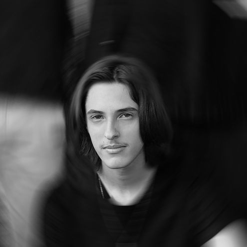

Victor

Henrique
Lubian
Moreira

Sou um estudante de Ciencia de Computção na UPF, Técnico de nível médio em Informática formado pelo IFSul Passo Fundo, e desenvolvedor com forte interesse em tecnologia, narrativa
interativa e estética digital experimental. Meus projetos frequentemente
exploram a interseção entre programação, jogos e inteligência artificial, sistemas locais com LLMs e experiências inspiradas na web minimalista e old-school. Demonstro preferência
por abordagens mais autorais e conceituais, valorizando identidade visual, atmosferas estranhas e soluções criativas ao invés de interfaces excessivamente padronizadas.
Além do interesse técnico em Python, APIs, automação e desenvolvimento backend, também possuo inclinação para escrita criativa, worldbuilding e ficção especulativa,
almejo projetos que parecem simultaneamente funcionais, pessoais e deliberadamente “fora do padrão”.
///////////////////
Algumas de minhas obras favoritas, ao ler essa lista entenda que além da ordem ser aproximada eu quero mudar ela cada vez que a vejo.
Algumas coisas que eu faço por diversão, sem colocar muito peso sobre.